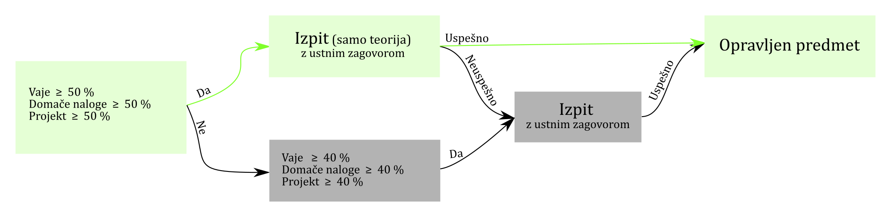

Študijski in izpitni red: 2023/24#
Predavanja / vaje#
Predavanja:
Ponedeljek 11:00 V/2: Prof. dr. Janko Slavič (DS-P3, 01 4771 226, janko.slavic@fs.uni-lj.si)
Vaje:
Ura |
as. Domen Gorjup |
as. Klemen Zaletelj |
as. Gašper Krivic |
|---|---|---|---|
8:00 |
Č1 (II/1) |
Č2 (I/4) |
|
10:00 |
Č3 (II/1) |
||
12:00 |
Č5 (II/1) |
Č4 (I/4) |
|
8:00 |
P1 (I/4) |
||
10:00 |
P2 (II/1) |
P3 (I/4) |
Govorilne ure:
četrtek 11:30 - 12:00 v učilnici II/1
Asistenti:
as. dr. Domen Gorjup (DS-P5, 01 4771 228, domen.gorjup@fs.uni-lj.si)
as. dr. Klemen Zaletelj (DS-P5, 01 4771 228, klemen.zaletelj@fs.uni-lj.si)
as. Gašper Krivic (DS-P5, 01 4771 228, gasper.krivic@fs.uni-lj.si)
Spremljanje sprotnega študija, obvestila itd
Sproten študij bomo izvajali s pomočjo: moj.ladisk.si. Za prijavo uporabite email, ki ga imate v VIS-u. Video prikaz prijave: če imate gmail, poljubni drugi email.
Vprašanja in odgovori:
Vprašanja na temo predmeta ali tudi širše lahko postavite/odgovorite na portalu: pinm.ladisk.si.
Spletna učilnica (e-ucilnica.fs.uni-lj.si)
Vsebine, povezane s predmetom, najdete tudi v e-učilnici.
Sprotni študij#
Sestava ocene#
25% sodelovanje pri vajah* (vsaj 50%)
10% tedenske domače naloge (vsaj 50%)
30% individualni projekt (vsaj 50%)
35% preizkus iz teorije (vsaj 50%): glejte pretekle preizkuse
* Na predavanja in vaje morate priti pripravljeni; uporabili bomo nekatere principe obratnega učenja!
Sodelovanje na vajah#
Sodelovenje na vajah se ocenjuje s kratkimi, napovedanimi pisnimi testi.
Testi se izvajajona vajah v računalniški učilnici, praviloma na začetku vaje. Rešujejo se v okolju Jupyter Notebook in se oddajajo ter ocenjujejo v sistemu sprotnega dela moj.ladisk.si (na enak način, kot domače naloge).
Popravljanje ocen sodelovanja na vajah#
Popravljati je mogoče oceno enega kratkega testa, v dogovorjenem terminu, praviloma na koncu semestra.
V primeru upravičene odsotnosti (npr. zdravniško opravičilo) je možno oceno testa na zamujeni vaji pridobiti zgolj na prvem naslednjem terminu govorilnih ur.
Individualni projekt#
Se navezuje na poljubno vsebino katerega-koli predmeta na FS in ga študent definira sam. Projekt mora vsebovati sledeče vsebine:
simbolno reševanje,
sistemi linearnih enačb,
interpolacija ali aproksimacija,
iskanje ničel,
integriranje ali odvajanje,
reševanje diferencialnih enačb.
Ocena individualnega projekta je sestavljena iz:
numerična pravilnost (30%),
struktura, urejenost, uporaba lastnih modulov, stil kode (docstringi) (30%),
lasten odnos / kreativni dodatek (30%),*
pripravljeni testi kode in/ali uporabniški vmesnik (10%).
Navodila za oddajo projekta:
Rok za oddajo projekta je naveden spodaj, med pomembnimi datumi.
Za izdelavo projekta uporabite predlogo, ki jo najdete tukaj
Projekt oddajte v obliki
zipdatoteke z imenom: Ime in priimek, vpisna številka.zip. Primer:Janez Novak, 23201111.zip.Velikost
zipdatoteke naj ne presega 20 MB.ZIP d oddate v e-učilnici.
Pred oddajo:
v projektu zakomentirajte (dodajte #) morebitno namestitev dodatnih paketov in funkcije
%%timeit:
# !pip install ime_paketa
# %%timeit
naredite
Kernel\(\to\)Restartin natoCell\(\to\)Run All. Prepričajte, da se vse celice izvedejo pravilno.
* Kot kreativni dodatek se tretira programska vsebina, ki na predavanjih in vajah ni bila posebej obravnavana. Kot na primer:
animacija rezultatov z uporabo matplotlib-a,
druge oblike naprednih prikazov (Plotly, Bokeh, vispy, pyqtgraph, VTK…),
avtomatsko branje podatkov iz spleta, pošiljanje rezultatov po elektronski pošti,
strojno generiranje poročila,
uporaba knjižnjice Pandas, zapis rezultatov v bazo podatkov, MS Excel,
uporaba platform Raspberry Pi, Arduino, zajem podatkov,
izdelava spletne aplikacije (Flask, Django),
uporaba modulov in knjižnic, kot so scikit-learn, TensorFlow, PyOpenCV.
Domače naloge (moj.ladisk.si)#
Splošna navodila za reševanje
Tedenske domače naloge vam dodelimo v sistemu moj.ladisk.si. Domače naloge rešujete v okolju Jupyter Notebook.
Datoteke, ki jih prenesete s spleta, shranite v obliki
.ziparhiva (če vaš brskalnik datoteki ne doda končnice.zip, to storite sami).Arhiv z datotekami, ki ga prenesete s spleta, razpakirate v celoti.
V mapi z razpakiranimi datotekami odprete ukazno okno in poženete ukaz
jupyter notebook.Celice v
.ipynbdatoteki z domačo nalogo poganjate po vrsti (tudi celice povsem na vrhu datoteke!).Rezultati so pri reševanju posredovani v spletni sistem moj.ladisk.si in se samodejno sprotno preverjajo. Pri reševanju je nujna povezava s spletom.
Pripravili smo tudi video navodila za reševanje.
Časovna omejitev reševanja domačih nalog
Domače naloge imajo definiran čas okna za reševanje:
Do odprtja okna za reševanje je možno predčasno reševanje naloge brez časovne omejitve.
V oknu za reševanje je dovoljen čas reševanja naloge omejen. Časovna omejitev teče od trenutka, ko znotraj okna za reševanje nalogo prvič odprete.
Po zaprtju okna se naloga zapre, reševanje ni več možno.
Svetujemo vam, da čim večji del naloge rešite v času predčasnega reševanja, pred odprtjem okna za reševanje.
Uporaba Jokerja za premik obveznosti
Vsakemu študentu sta pri predmetu na voljo dva Jokerja, ki jih lahko uporabite za premik obveznosti v prihodnost.
Z uporabo Jokerja lahko okno za reševanje domače naloge premaknete za \(\leq\) 14 dni naprej.
Uporaba jokerja ni možna, če ste nalogo že odprli.
Pred pričetkom okna za reševanje je za premik naloge potreben en Joker, v času okna za reševanje pa dva.
Predlog ocene na podlagi sprotnega študija#
Predlog ocene:
50,0 do 57,5%: 6/6
62,5 do 67,5%: 7/7
72,5 do 77,5%: 8/8
82,5 do 87,5%: 9/9
92,5 do 100%: 10/10
(Nedefinirana področja so vmesne ocene.)
Individualni projekt in predlog ocene se zagovarja na ustnem zagovoru.
Pri zagovoru upoštevamo tudi kvalitativno oceno sodelovanja na vajah, predavanjih ali pinm.ladisk.si (1000 točk je ekvivalent 1xP). Glejte tudi.
Pomembni datumi#
Oddaja individualnega projekta: (15. jan 2024 do 12h)*
Preizkus iz teorije se piše na zimskem izpitnem roku.
Zagovori: po izpitnem roku.
* V primeru oddaje vsaj 1 teden pred rokom, se uspeh množi z \(1.1\); v primeru zamude pa se upeh množi z \(0.9^n\), kjer je \(n\) število začetih dni zamude.
Izpit#
Izpolnjevanje pogojev za pristop k izpitu: vsak posamični dogodek (razen teorije in sodelovanja pri predvanjih), ki sestavlja oceno mora biti večji od 40%.
Izpit se opravlja v dveh delih: 50 min preverjanje uporabe numeričnih metod za računalnikom (tipično dve nalogi, s sabo imate lahko poljubne pisne vire, dostopa do interneta ni), nato 60 min za tri teoretična vprašanja (glejte primer izpita). Za pozitivno oceno morata biti oba dela pozitivna.
Literatura#
Slavič J.: Programiranje in numerične metode s Pythonom, izvršljiva knjiga ali spletna knjiga, 2015-
Petrišič J.: Uvod v Matlab za inženirje, 2011
Demšar J. Python za programerje, 2012 (glejte spletno učilnico: http://goo.gl/n4pVUe)
Nicolas P. Rougier: From Python to Numpy, 2017 spletna knjiga
Kiusalaas J: Numerical Methods in Engineering with Python 3, 2013
Fangohr H. Python for Computational Science and Engineering, 2014 (dosegljiva na spletu: http://goo.gl/nCOfY0)
Bucky R. Python 3.4 Programming Tutorials (videi dosegljivi na: http://goo.gl/ie6nfD)
Projekt TOMO (več vsebin, glejte predvsem predmete na FMF in FRI)
Uporaba paketov Numpy, Scipy itd za inženirje Mr. P Solver (YouTube)
Nekatere spletne učilnice na temo Pythona najdete na pinm.ladisk.si
Pogoji za poslušanje v naprej?#
Predmeta ni mogoče opravljati v naprej.